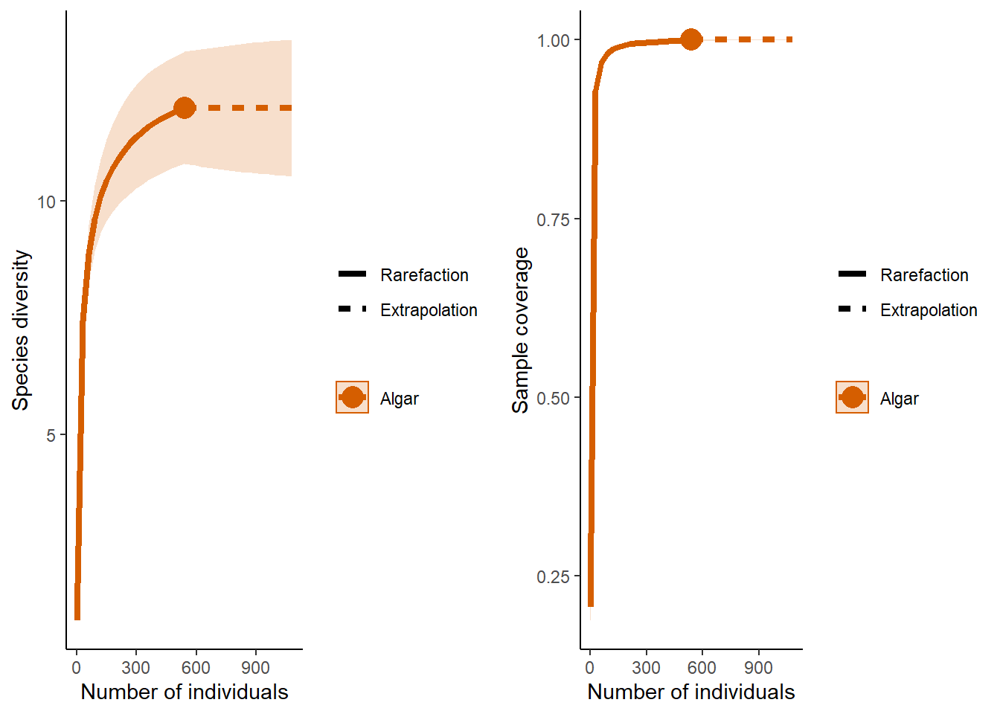
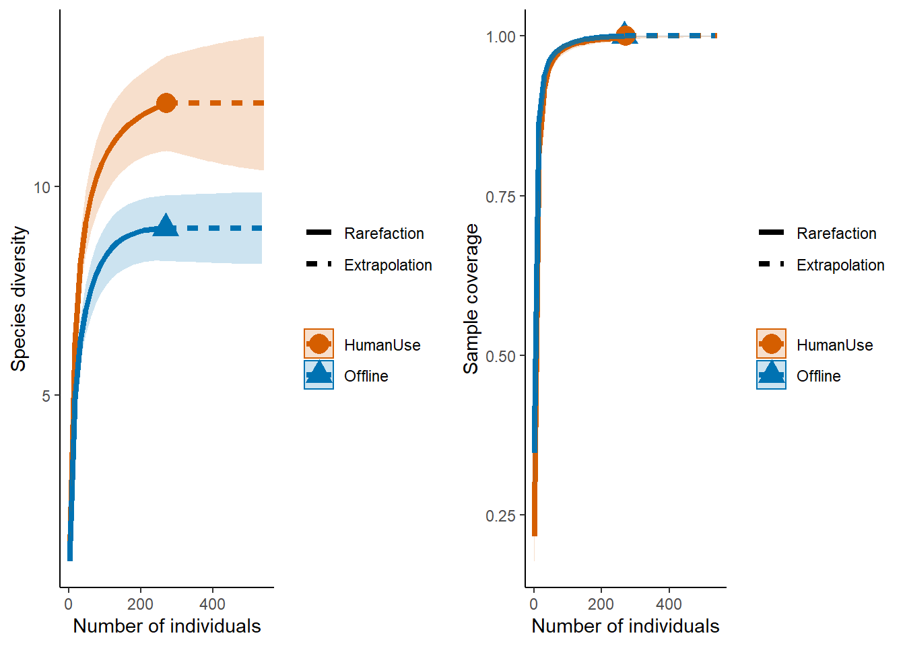
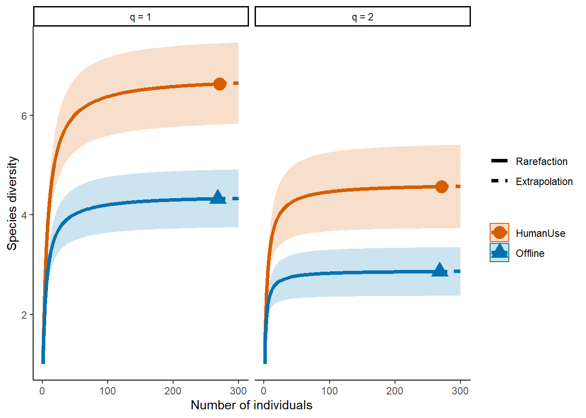
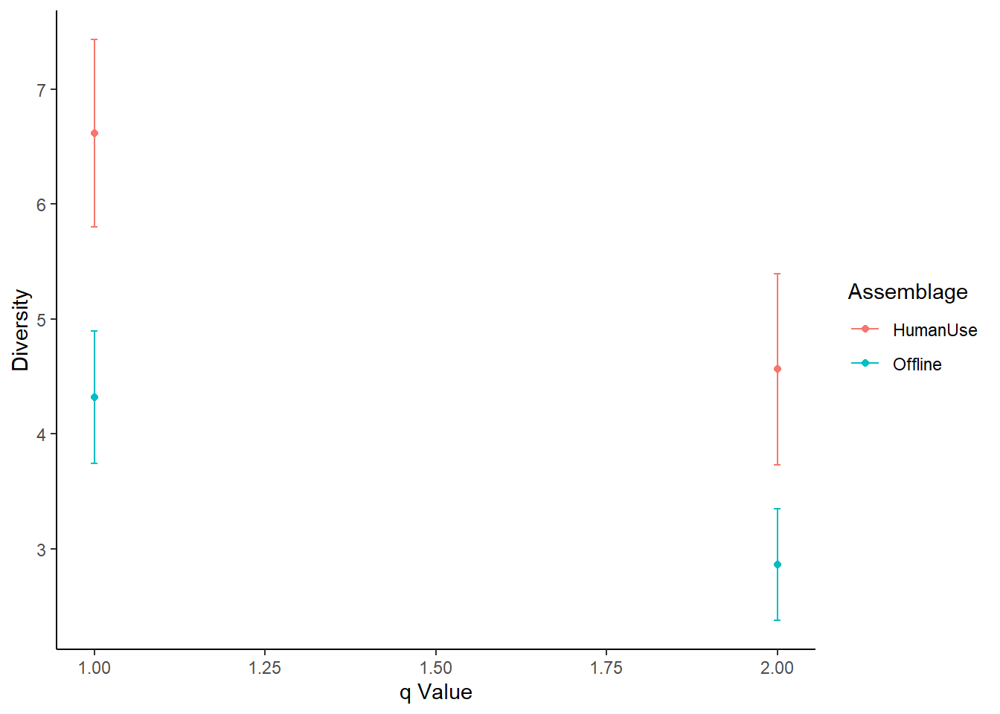

Chapter 5 Community composition
One of the most fundamental questions researchers and practitioners want to answer with camera traps is how many species are there?
To illustrate this, we will continue to use our case study from Northern Alberta:
# Read in the example dataset
dat <- read.csv("data/raw_data/Example_detection_data.csv", header=T)
eff <- read.csv("data/raw_data/Example_deployment_data.csv", header=T)
sta <- read.csv("data/raw_data/Example_station_data.csv", header=T)5.1 Observed richness
The simplest way to quantify species richness is counting the number of species you detect on your camera traps - ‘observed richness’. In the case of the example data set, this represents 12 species.| Species_observed | Species_count |
|---|---|
| Odocoileus virginianus | 1 |
| Alces alces | 2 |
| Rangifer tarandus | 3 |
| Lepus americanus | 4 |
| Canis lupus | 5 |
| Cervus canadensis | 6 |
| Canis latrans | 7 |
| Lynx canadensis | 8 |
| Ursus americanus | 9 |
| Grus canadensis | 10 |
| Martes americana | 11 |
| Tamiasciurus hudsonicus | 12 |
Although you it is possible to compare observed richness across different strata, survey effort must be identical between your comparison strata. This often is not the case in camera trap studies where cameras break, run out of battery or are deployed for different lengths of time. The number of species you detect is a function of the amount of effort you spent surveying or the number of individuals detected - the longer a camera is active/the more individuals detected the more species it will detect. Observed richness typically underestimates true richness. Consequently, We need a way of comparing species richness which accounts in some way for survey effort.
5.2 Estimated richness
There are two widely accepted ways to account for survey effect and imperfect detection where estimating species richness using camera traps:
- using the incidence of rare species to correct observed richness (non-parametric estimators)
- using multispecies occupancy models to account for the species present but not observed
5.2.1 iNext package
The iNext package (INterpolation and EXTrapolation of species richness) - is an easy to use and comes with a wealth of plotting functions - see the iNext Quick Introduction for a great walk through tutorial. Its core functionality is based on:
Chao et. al. (2014) Rarefaction and extrapolation with Hill numbers: a framework for sampling and estimation in species diversity studies. Ecological Monographs
To run this example code you will need iNEXT , ggplot2, and gridExtra packages.
library(iNEXT); library(ggplot2); library(gridExtra)Single strata
You may want to see if your camera project has sufficient survey effort to capture the species within the focal area. To do this we can produce species accumulation curves across the site as a whole. Species accumulation curves plot the increase in species richness as we add individuals or survey units. If the curve plataues, flattens, then that suggests you have sampled the majority of the species in your survey area.
Data formatting
Applying the iNEXT functions to camera trap data is perhaps simplest using ‘abundance’ function - this requires a string of abundance frequencies contained within a list. We can create this format from the Independent_total_observations.csv output of the “SingleSiteExploration” script (see the Standardisation chapter).
totObs <- read.csv("data/processed_data/Algar_30min_Independent_total_observations.csv", header=T)
# Make an empty list to store our data
site <- list()
# Sum all of the observations of each species (colSums), and then make it an element in the list
site[[1]]<- colSums(totObs[3:ncol(totObs)])
# Give it the project ID name
names(site) <- dat$Project.ID[1]This will produce a list object which looks like this:
## $Algar
## Alces.alces Canis.latrans Canis.lupus
## 62 3 22
## Cervus.canadensis Grus.canadensis Lepus.americanus
## 1 134 10
## Lynx.canadensis Martes.americana Odocoileus.virginianus
## 16 10 182
## Rangifer.tarandus Tamiasciurus.hudsonicus Ursus.americanus
## 53 3 43Analysis
Once you have created your list, it is simple to run a basic iNEXT analysis, and create a graphs of the result:
out <- iNEXT(site, datatype="abundance")p1 <- ggiNEXT(out, type=1)+ theme_classic() ## Warning in ggiNEXT.iNEXT(out, type = 1): invalid color.var setting, the iNEXT
## object do not consist multiple assemblages, change setting as Order.qp2 <- ggiNEXT(out, type=2)+ theme_classic() ## Warning in ggiNEXT.iNEXT(out, type = 2): invalid color.var setting, the iNEXT
## object do not consist multiple assemblages, change setting as Order.qgrid.arrange(p1, p2, nrow = 1)
Multiple strata
The code to build a multi strata comparison is very similar to that of a single strata, except now you separate the observations into their relevant categories. To make this split, we refer to the sta dataframe, which contains the treatment types for each camera station. We match the Deployment.Location.ID’s in our dataframe with those in each treatment category using the %in% command.
# The treatment types for each Deployment.Location.ID are in the sta file
# Make an object containing all of the site ID's for the "Offline" cameras
off <- sta$Deployment.Location.ID[sta$Treatment=="Offline"]
# And "HumanUse" cameras
hum <- sta$Deployment.Location.ID[sta$Treatment=="HumanUse"]
# Create a new empty list
strata <- list()
# Only sum the data for each relvent strata
strata[[1]] <- colSums(totObs[totObs$Deployment.Location.ID %in% off, 3:ncol(totObs)])
strata[[2]] <- colSums(totObs[totObs$Deployment.Location.ID %in% hum, 3:ncol(totObs)])
# Give them names
names(strata) <- c("Offline", "HumanUse")Then, as before, run your iNEXT model and examine the output:
out <- iNEXT(strata, datatype="abundance")
p1 <- ggiNEXT(out, type=1)+ theme_classic()
p2 <- ggiNEXT(out, type=2)+ theme_classic()
grid.arrange(p1, p2, nrow = 1)
From the plot on the left you can see that the ‘HumanUse’ strata detected more species than the ‘Offline’ strata. The plot on the right suggests that we have likely sampled all of the species that will be detected within these habitats (samples are ‘complete’).
Notes These two examples just scratch the surface of the functionality of the iNEXT package, and the ways of using it with camera data.
Examples
Some examples of using iNEXT with camera trap data:
Cusack et.al 2015 Random versus Game Trail-Based Camera Trap Placement Strategy for Monitoring Terrestrial Mammal Communities
5.3 Diversity
One issue with species richness assessments is that they weight all species equally, thus a community with 12 species all present in equal abundances will give you the same richness value as a high skewed community with one highly abundant species, and 11 very rare ones. Consequently, you might want to estimate species diversity.
Luckily, the iNEXT package is well suited for comparisons of diversity indices through the use of hill numbers - of which the ‘q’ value represents the traditional Shannon (q=1) and Simpson (q=2) diversity indices (species richness: q = 0). Note Increasing values of q reduces the influence of rare species on your estimate of community diversity.
For example, we might want to compare the species diversity across our two focal strata:
# We also introduce the object t -> which reflects the range of values over which you want to predict species richness
t <- c(1, seq(2, 300, by=2))
# For q =2 (shannon)
out <- iNEXT(strata, q=c(1,2) ,datatype="abundance", size=t)
ggiNEXT(out, type=1, facet.var="Order.q", color.var="Assemblage") + theme_classic() 
The plot above shows that the differences between our two strata remain across increasing q values (suggesting that the different inst just driven by several rarely encountered species).
Point estimates and their confidence intervals can also be extracted from iNEXT model objects - but it does require a little data wrangling. For example, if we wanted to directly compare the diversity estimates of our strata at 250 individuals:
# The lapply function applies the same logic across elements in a list
point.250 <- lapply(out$iNextEst, function(x) { x[ x$m == 250, ] })
point.250 <- point.250$size_based
# Make a nice ggplot!
ggplot(point.250, aes(x=Order.q, y=qD, colour=Assemblage)) +
theme_classic() +
#scale_x_discrete(breaks=c("1","2"),labels= c("1","2")) +
geom_errorbar(aes(ymin=qD.LCL, ymax=qD.UCL), width=.01) +
labs(y="Diversity", x = "q Value") +
geom_point() 